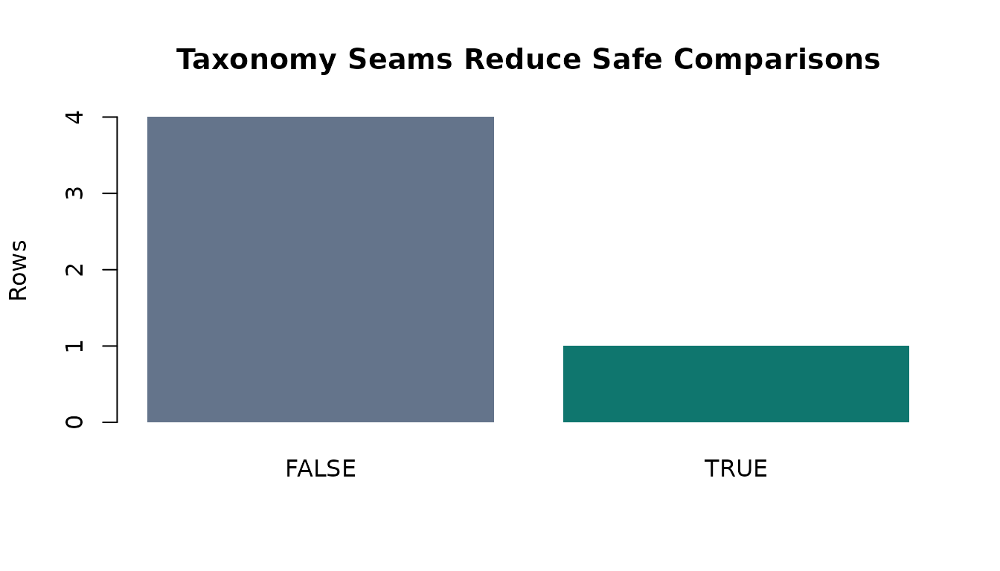

How to Fool Yourself with O*NET over Time
Source:vignettes/how-to-fool-yourself-with-onet-over-time.Rmd
how-to-fool-yourself-with-onet-over-time.RmdA common mistake is to treat every release-to-release difference as a fresh within-occupation change. O*NET archives contain source dates, domain sources, suppression flags, and taxonomy vintages. Ignoring those fields can turn a carryforward, transition row, or crosswalk seam into a misleading trend.
The Naive Difference
panel <- onet_panel(
"Abilities",
versions = c("30.2", "30.3"),
scale = "IM",
archives = c(
`30.2` = file.path(archive_base, "db_30_2_text"),
`30.3` = file.path(archive_base, "db_30_3_text")
),
release_dates = c(`30.2` = "2026-02-01", `30.3` = "2026-05-01")
)
naive <- panel |>
select(release_version, onet_soc_code, element_id, element_name, data_value)
naive <- naive |>
filter(release_version == "30.2") |>
select(onet_soc_code, element_id, element_name, from_value = data_value) |>
inner_join(
naive |>
filter(release_version == "30.3") |>
select(onet_soc_code, element_id, to_value = data_value),
by = join_by(onet_soc_code, element_id),
relationship = "one-to-one"
) |>
mutate(naive_change = to_value - from_value) |>
arrange(desc(abs(naive_change)))
naive |>
head(8) |>
print(width = Inf)
#> # A tibble: 7 × 6
#> onet_soc_code element_id element_name from_value to_value naive_change
#> <chr> <chr> <chr> <dbl> <dbl> <dbl>
#> 1 29-1141.00 1.A.1.b.1 Problem Sensitivity 4.6 4.9 0.300
#> 2 15-1252.00 1.A.1.a.1 Oral Comprehension 4.12 4.35 0.230
#> 3 41-1011.00 1.A.1.a.1 Oral Comprehension 4 4.15 0.150
#> 4 11-1011.00 1.A.1.a.1 Oral Comprehension 4.38 4.5 0.120
#> 5 15-1252.00 1.A.1.b.1 Problem Sensitivity 4.5 4.5 0
#> 6 29-1141.00 1.A.1.a.1 Oral Comprehension 4.71 4.71 0
#> 7 11-1011.00 1.A.1.b.1 Problem Sensitivity 4.22 4.22 0The naive table is useful as a screening tool. It is not enough for an interpretation.
The Reconciled Difference
changes <- onet_panel_reconcile(panel, onet_crosswalk_bridge("2019", "2019"))
changes |>
select(
to_soc_code,
element_name,
value_change,
change_type,
from_source_date,
to_source_date,
method_break,
safely_comparable
) |>
arrange(desc(abs(value_change))) |>
head(8) |>
print(width = Inf)
#> # A tibble: 7 × 8
#> to_soc_code element_name value_change change_type
#> <chr> <chr> <dbl> <fct>
#> 1 29-1141 Problem Sensitivity 0.300 recode_or_recalc_flag
#> 2 15-1252 Oral Comprehension 0.230 real_update
#> 3 41-1011 Oral Comprehension 0.150 real_update
#> 4 11-1011 Oral Comprehension 0.120 real_update
#> 5 15-1252 Problem Sensitivity 0 stale_carryforward
#> 6 29-1141 Oral Comprehension 0 resampled_stable
#> 7 11-1011 Problem Sensitivity 0 stale_carryforward
#> from_source_date to_source_date method_break safely_comparable
#> <date> <date> <lgl> <lgl>
#> 1 2024-08-01 2024-08-01 FALSE FALSE
#> 2 2024-07-01 2025-07-01 FALSE TRUE
#> 3 2024-06-01 2025-06-01 FALSE TRUE
#> 4 2024-07-01 2025-07-01 TRUE FALSE
#> 5 2024-07-01 2024-07-01 FALSE TRUE
#> 6 2024-08-01 2025-08-01 FALSE TRUE
#> 7 2024-07-01 2024-07-01 FALSE TRUENow the same differences have labels. A change without a source-date change is not as strong as a change with fresh source data. A method break should be treated as a warning rather than as clean within-occupation change.
The Taxonomy Seam
cross_panel <- onet_panel(
"Abilities",
versions = c("24.3", "25.1"),
scale = "IM",
archives = c(
`24.3` = file.path(archive_base, "db_24_3_text"),
`25.1` = file.path(archive_base, "db_25_1_text")
),
release_dates = c(`24.3` = "2020-08-01", `25.1` = "2020-11-01")
)
bridge <- tibble::tibble(
from_vintage = "2010",
to_vintage = "2019",
from_onet_soc_code = c("15-1132.00", "15-1132.00", "29-1141.00"),
to_onet_soc_code = c("15-1252.00", "15-1253.00", "29-1141.00"),
map_type = c("split", "split", "one_to_one"),
crosswalk_weight = c(0.5, 0.5, 1)
)
seam <- onet_panel_reconcile(cross_panel, bridge)
seam |>
select(
from_onet_soc_code,
to_onet_soc_code,
element_name,
change_type,
transition_data,
crosswalk_uncertain,
safely_comparable
) |>
print(width = Inf)
#> # A tibble: 5 × 7
#> from_onet_soc_code to_onet_soc_code element_name change_type
#> <chr> <chr> <chr> <fct>
#> 1 15-1132.00 15-1252.00 Oral Comprehension transition_data
#> 2 15-1132.00 15-1253.00 Oral Comprehension transition_data
#> 3 29-1141.00 29-1141.00 Oral Comprehension real_update
#> 4 15-1132.00 15-1252.00 Problem Sensitivity dropped
#> 5 15-1132.00 15-1253.00 Problem Sensitivity dropped
#> transition_data crosswalk_uncertain safely_comparable
#> <lgl> <lgl> <lgl>
#> 1 TRUE TRUE FALSE
#> 2 TRUE TRUE FALSE
#> 3 FALSE FALSE TRUE
#> 4 FALSE TRUE FALSE
#> 5 FALSE TRUE FALSE
safe_counts <- seam |>
count(safely_comparable, name = "rows")
barplot(
height = setNames(safe_counts$rows, safe_counts$safely_comparable),
col = c("#64748b", "#0f766e"),
border = NA,
ylab = "Rows",
main = "Taxonomy Seams Reduce Safe Comparisons"
)
Before making a historical claim, ask: Did the value change? Did the source date change? Did the occupation cross a taxonomy seam? Was either row transition data or suppressed? The package gives you those fields so the caveats do not get lost.